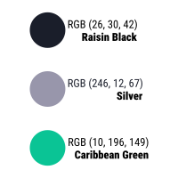
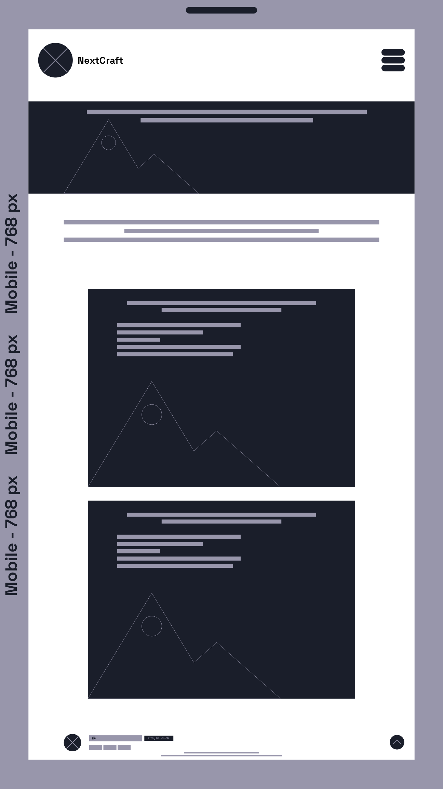
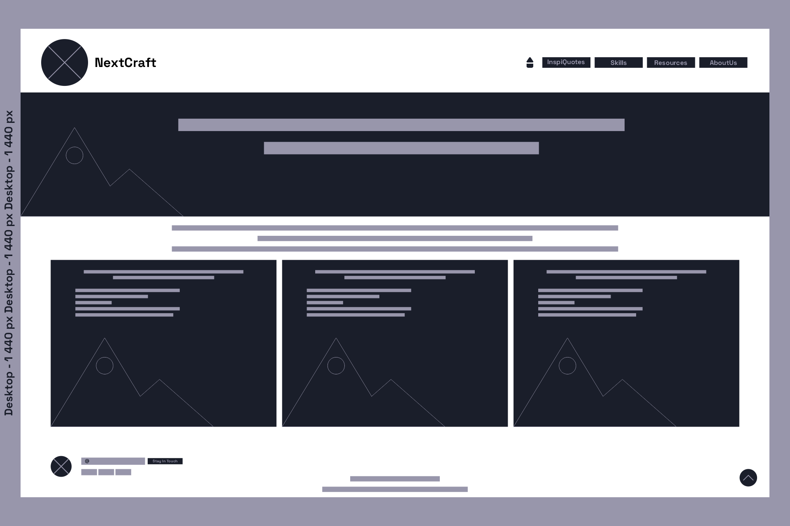

1️⃣ | SITE NAME: NextCraft
The name NextCraft brings together two simple but powerful ideas. Next speaks to the future and everything that is coming. Craft speaks to the kind of deep, deliberate mastery that takes time and effort to build. Together they describe exactly what this platform is about: a place where learners do not just consume knowledge, they actually forge it.
2️⃣ | SITE PURPOSE:
NextCraft is a platform designed to prepare learners for the demands of tomorrow’s tech-driven world. Here, you do not just memorize, you build.
3️⃣ | SCENARIOS:
- What skills do I need to develop to secure a better professional future in the face of AI?
- If AI possesses all the factual knowledge in the world, how should education evolve to emphasize critical thinking, complex problem-solving, and mentoring?
4️⃣ | COLOR SCHEMA:
The site uses the following colors: Silver, Caribbean blue and Black raisin. They are distributed as follows:

- ♟️Black raisin: Main background, header, footer.
- ♟️Silver: Body text, section backgrounds, maps. Creates contrast with the dark background.
- ♟️Carribean blue: Buttons, links, important headings, active borders.
5️⃣ | TYPOGRAPHY:
Font: Space Grotesk (Google Fonts) are used on all pages.
- ♟️Weight 700 > h1, site name in the header, inspirational quotes
- ♟️Weight 600 > h2, section titles
- ♟️Weight 400 > body text, paragraphs, About page
- ♟️Weight 300 > captions, metadata, secondary text
6️⃣ | WIREFRAMES:
These wireframes outline the basic structure of the NextCraft home page across two screen sizes. Content blocks are represented as placeholders to focus on layout rather than design.
Mobile

Desktop
